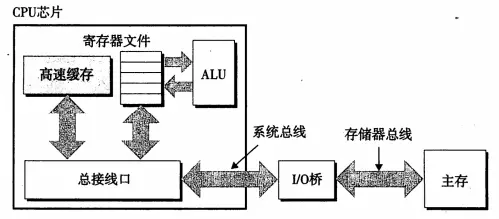

再安利一波csapp真优秀，本章之后你会了解内存，机械硬盘，固态硬盘等储存器的优劣原理，你会理解为什么只有机械硬盘的笔记本升级到固态就脱胎换骨了一番，内存是DRAM,而固态等是ROM,还有就是局部性的哲学。通过学习高速缓存，理解程序的局部性的真正意义（你还能看到csapp第三版封面的图是啥玩意。

1、存储技术
1.1、随机访问存储器
静态RAM：（SRAM）用作高速缓存，通常只有几兆，在CPU芯片上、下；硬件设计中，将每个位存在一个双稳定的存储单元中，如下图所示，只有在两边的时候保持稳定性：
动态RAM：（DRAM）用作主存（我们通常说的机器的内存），通常几百、几千兆。每个单位使用一个电容和一个访问晶体管构成，容易被干扰，有的加入有纠错码。系统需要周期性读出，然后刷新重写存储器的每一位。DRAM详细构造图：
访问示例（我们来看看是如何访问超单元（2，1）处的内容）
为了加快二维数组的访问，存储控制器在读取（2，1）处的内容的时候，使用addr先发送行地址2到DRAM芯片中，拷贝整个第二行的内容到内部缓冲区中，然后发送列地址1，从内部行缓冲区中读取1的地址内容通过data发送到存储控制器中去。
有缓存的问题所有这就能解释当初zzz学长解释下面两个循环为什么第一个快于第二个。（赵神牛逼
1.2、存储器模块

如图所示是一个64M的主存，芯片编号0-7，每个芯片存储8M的数据，存储器模块将其组合起来，聚合内存。将每单个芯片的超单元映射成主存地址A的各个字段。这样控制器收到一个主存地址A的时候，存储控制器将其选择包含的具体芯片，将A转换成（i，j）的形式，然后将（i，j）发送到芯片模块中开始取数据。
存储在ROM设备中的程序通常称为固件，当一个计算机系统通电以后，它会运行存储在ROM中的固件。
1.3、访问主存（读事务、写事务）

读事务：考虑当我们执行，movl A，%eax的情况，地址A的内容会被加载到eax中去，总线发起读事务（分三步）：①CPU将A的地址总线放到系统总线上，桥作为中转点，将地址信号传送到存储器总线上去；②主存感觉到了存储器总线上的地址信号，从存储器总线上读地址，并从主存中取出相应的数据，写入到存储器总线上去，桥将数据专递到系统总线中去；③CPU感觉到了系统总线上的数据，将数据拷贝到eax中。I/O桥作为中转，将地址信号从系统总线转到存储器总线，然后又将数据从存储器总线转到系统总线。在这个过程中，CPU始终是从系统总线上发送地址，读取数据，主存始终是从存储器总线上接受地址并发送数据。（写事务是一个逆向过程不做讲解）
1.4、磁盘存储 （硬盘）

磁盘由盘片构成，表面覆盖的有磁性材料，中间是一个主轴，通过旋转读取和记录数据。每组同心圆磁道分割的区域就是一个扇区。扇区之间是有间隙的，如图：
磁盘读写操作：
磁盘以扇区为单位来读写数据，对扇区的访问时间由三个部分组成：寻道时间、旋转时间、传送时间。
以图a为例，当我们要访问同心圆磁道5的内容时，寻道时间是指传动手臂将读写头移动到同心圆第五磁道的时间，旋转时间指的是同心圆5开始读取内容的位置，如果手臂移动到第五磁道的时候读写位置刚过，就要等磁盘旋转一圈之后再读取；传送时间，扇区第一个位处于读写头的时候，读写该扇区的时间。（寻道时间和旋转延迟大致相当）
2、局部性
局部性原理是指CPU访问存储器时，无论是存取指令还是存取数据，所访问的存储单元都趋于聚集在一个较小的连续区域中。 –来自百度百科我们讲存储器体系结构就会很好的理解局部性，简单的来说，我们的主存就是我们为了提高我们磁盘文件的一个高速缓存，因为我们知道这一时刻访问到磁盘的数据可以下一时刻也会被访问，这一位置被访问的数据，邻居位置也可能会被访问。这也就是我们通常说的：时间局部性和空间局部性。
最好的例子就是上面数组求和。可以往前看看。
3、存储器层次结构
3.1、书上大图

越往上，代表的是访问速度越快，当然存储容量小，价格也非常的高。越往下，意味着访问速度越慢，存储容量大，价格相对便宜。通常我们CPU的寄存器是L1的高速缓存，L1是L2的高速缓存，以此类推。
3.2、缓存命中和不命中

上图我们把k+1理解为主存，被划分为16个块来存储数据，块的大小是固定的。我们把K层理解成L3高速缓存，任何时刻L3就是主存的一个子集。上图我们能看出，L3只能保存4个块的数据，块的大小保持和主存的大小一样的。上图中我们看到，L3中保存的是主存中的4，9，14，3的数据。那么什么又是命中率和不命中率呢？
缓存命中：当程序需要第k+1层数据块14的时候，程序会在当前存储的k层，寻找块14的数据，刚好14在k层的话，就是一个缓存命中，这比从k+1层读取的速度要快很多。
缓存不命中：当程序需要访问到块12的时候，在k层没有该数据块，就是一个缓存不命中，这时候就会从k+1层中读取块12将其替换到k层的一个数据块（覆盖或驱逐一个已有的数据块）。程序还是从k层访问块12。
放置策略：如果我们从k+1层中获得的数据随机的放置在k层，这样的随机放置就会导致访问的效率降低，我们的放置策略是块i必须放置在（imod4）中，也就是0，4，8，12会映射到同一个k层的块0中。这就会导致一个冲突不命中，也就是说如果程序交替请求k+1层的0，4块，由于会一直映射到k层的0块中，这时候虽然k层有空余的缓存，但还是每次不命中。
3.3、类比一下web的缓存
web缓存是通过http头中的上次If-Modified-Since或者If-Unmodified-Since使用对比上次修改时间验证资源是否需要更新，当访问一个网页，网页如果在本地有缓存其实并不是直接使用缓存中的page因为你要保证服务器没变化，所以本机还是会发出一个请求询问服务器该界面最后一次修改的时间，服务器只要返回时间就可以而不必要返回内容，如果服务器上网页的修改时间是缓存时间之前的，那直接使用缓存的，如果缓存之后的服务器修改了，将重新请求网页。
4、高速缓存存储器（集成在CPU内部的一个部件L1、L2、L3三级缓存）

4.1、通用高速缓存存储器内部结构

高速缓存是一个数组，每个组包含一个或多个行，每个行有一个有效位、一个标记位，以及数据块。我们进行访问的地址结构就是：t的标记位+s个组索引+b个块偏移；
4.2、直接映射高速缓存（每个组只有一行的简单访问模式）

(举例：直接映射高速缓存的抽取请求字的过程就像我们投递快件一样，组索引其实就像我们的邮政编码，比如我们这里的510824，然后找到编码的组，也就是我的大位置（xx县），然后看标记上写的具体xx小区x栋楼，并且核实该地址是否有效（有效位1），两项都满足条件以后将该快件给快递员投递，快递员到达具体xx小区x楼的时候就根据门牌号（偏移位）敲开你家的门。binggo，快递到达）
高速缓存确定一个请求是否命中，然后抽出请求字的过程分两步：
1> 组选择：很好理解，就是地址位中的组索引匹配高速缓存中的组
2> 行匹配和字抽取：行匹配主要是对有效位进行匹配，和标记位与高速缓存中的标记位一致，这就是一个命中。最后的字抽取就简单了，只是看地址后面的偏移值。
4.3、结构剖析（真正意义上的高速缓存）

Intel Core I7高速缓存层次结构
在实际的商用CPU中，将高速缓存分为d-cache数据高速缓存，i-cache指令高速缓存和同一高速缓存，i7的架构中我们可以看出，L1分为数据和指令高速缓存，共享L2高速缓存，同时每个核共享L3高速缓存
5、存储器山图♂

存储器的性能不能简单的用一个数字来描述，如果实在要形容的话，是一座时间局部性和空间局部性构成的山。山峰和低谷的差别不是一个数量级。明智的程序员会试图构造运行在山峰的程序而不是低谷。我们来看看这座存储器山是啥意思。
这段代码所做的事情，就是将data数组的内容依次读取到CPU的寄存器中。其中elems代表的是data的工作集大小也就是size时间局部性，代表Y轴；而stride（步长）代表的是横轴X；Z轴表示吞吐量，Mb/s。越往上吞吐量越大（红色部分）。我们反复以不同的size和stride值调用我们的核心测试代码，就会得到如上图的存储器山。最高处的红色山峰为L1，由于工作集（size）很小，能全部保存在L1高速缓存中，所以这时候即使stride很长，对于性能也没太大的影响。L2和L3、主存随着stride的增加有明显的坡度，空间局部性下降。特别明显的是，主存的蓝色山峰，即使工作集很大（时间局部性极地）其stride（空间局部性）的影响也相当的明显，最高与最低处相差7倍。也就是告诫我们，即使时间局部性无法改变了，空间局部性也可以使得程序的性能极大的提高。